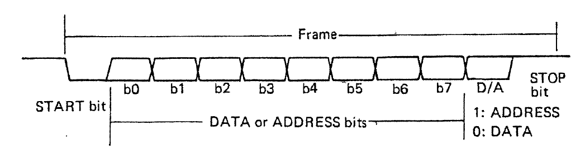
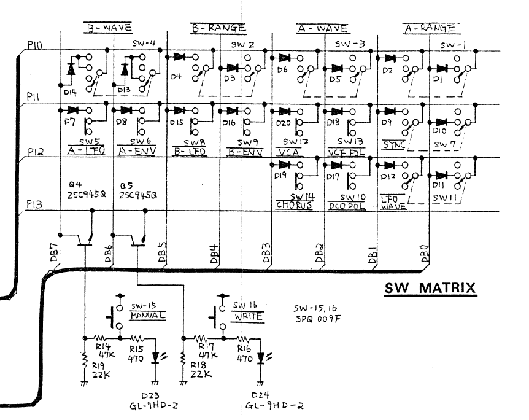
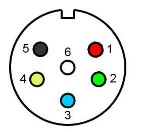

Around three years ago, in april 2012, I decoded the PG-200 protocol. Using a Saleae logic probe I took a closer look at what happened while using the PG-200, and built a device that converts MIDI CC messages into PG-200 commands. This device, the MPG-200, also receives and transmits MIDI note messages, making it possible to completely control the JX-3P using MIDI.
To my knowledge, at the time I started the project only two other devices existed that could do this - the KiwiTechnics JX-3P upgrade and Patch Editor and the Organix Midi upgrade kit. These both require extensive modification of the JX-3P. Later, Mode machines made a PG-200 clone called the DT-200. I have yet to see the PG-200 protocol fully documented, but I may have missed something as I have not searched the web lately.
As a tiny gift to the synth community in honor of my daughter's birth, I now release all the information I have gathered. This document is based on the data found in the JX-3P/PG-200 service manual as well as a lot of work done by myself. Feel free to use it in any way you see fit, but I would be really happy if you acknowledged my contribution.
From the service manual: Data is transfered LSB first, the 9th bit indicates data type.

Commands are grouped into two main categories - potentiometers and switches. All the addresses and values described below are the data the way they are sent from the MCU. The signal is inverted before it is put on the wire, so to measure them correctly you have to setup your logic probe for an inverted signal.
Potentiometers transmit one address and one value byte. Data is 8 bit, thus ranging from 0 to 255
All potentiometers have addresses above 15, so it's easy to check if it is a potentiometer or switch that is being sent/received.
Potentiometer addresses:
| Potmeter | Address |
|---|---|
| Fine tune | 16 |
| Tune | 17 |
| Env amount | 18 |
| LFO amount | 19 |
| Source mix | 20 |
| HPF | 21 |
| Resonance | 22 |
| Cut off freq | 23 |
| Env mod | 24 |
| Potmeter | Address |
|---|---|
| LFO mod | 25 |
| Pitch follow | 26 |
| VCA level | 27 |
| LFO rate | 28 |
| LFO delay time | 29 |
| Attack | 30 |
| Decay | 31 |
| Sustain | 32 |
| Release | 33 |
Switches use one or two bits each, so several switches are grouped into one value byte with the same address. A bitmask is used to indicate which bits have changed (e.g. what switch has been moved). The mask is calculated by bitwise xor'ing the previous and the current state of the switch.
A switch command consists of three bytes:
Switch commands. Bits in the table below are with LSB to the right.
| Switch | Group address | Bits | Valid values |
|---|---|---|---|
| DCO 1 range | 0 | 0,1 |
xxxxxx00: 16' xxxxxx01: 8' xxxxxx10: 4' |
| DCO 1 waveform | 0 | 2,3 |
xxxx00xx: Saw xxxx01xx: Pulse xxxx10xx: Square |
| DCO 2 range | 0 | 4,5 |
xx00xxxx: 16' xx01xxxx: 8' xx10xxxx: 4' |
| DCO 2 waveform | 0 | 6,7 |
00xxxxxx: Saw 01xxxxxx: Pulse 10xxxxxx: Square 11xxxxxx: Noise |
| Crossmod | 1 | 0,1 |
xxxxxx00: Off xxxxxx01: Sync xxxxxx10: Metal |
| Env polarity, VCF | 1 | 2 |
0: Inverted 1: Normal |
| VCA mode | 1 | 3 |
0: Gate 1: Envelope |
| Env switch DCO 2 | 1 | 4 |
0: Off 1: On |
| LFO switch DCO 2 | 1 | 5 |
0: Off 1: On |
| Env switch DCO 1 | 1 | 6 |
0: Off 1: On |
| LFO switch DCO 1 | 1 | 7 |
0: Off 1: On |
| LFO waveform | 2 | 0,1 |
xxxxxx00: Sine xxxxxx01: Square xxxxxx10: Random |
| Env polarity, DCOs | 2 | 2 |
0: Inverted 1: Normal |
| Chorus | 2 | 3 |
0: Off 1: On |
Value and address bytes are closely related to the hardware layout of the PG-200:

The rows, P10-P13 correspond to the group addresses. The columns are read as the switch value. Each column is pulled high when not sunk to ground through the diodes.
For example, the A-range (DCO 1 range) switch is a dual throw, three pole switch. When it is in the bottom position (corresponding to '16), neither DB1 or DB0 are connected to P10, and are thus left pulled up and read as xxxxxx11. However, in the middle position ('8), DB0 is pulled down when P10 goes low, but DB1 is left pulled up, reading xxxxxx10. Finally, the top position ('4) reads as xxxxxx01. Notice that this is the inverse of the value byte sent to the JX-3P, the MCU inverts the signal for some reason. It looks a bit weird, but I've double checked this with probes running directly from the scanlines/data input lines.
The PG-200 sends three special commands that are not on the switch/potentiometer formats:
| Command | Address | Value |
|---|---|---|
| Manual | 130 | all address/value bytes (?) |
| Write | 129 | 0 |
| Ping (sent on startup) | 128 | 0 |
The PG-200 is connected to the JX-3P using a 6 pin DIN connector. The cable is one-to-one, pin 1 is connected to pin 1 on the other end of the cable etc. The shield is not connected. Power is provided to the PG-200 by the JX-3P.
The six pins are as follows:
This is the pin numbering looking into the front of a female din connector (image is borrowed from digitalpeer).

There are a couple of things you need to be aware of with the PG-200/JX-3P.
When the pg-200 starts up, it sends an initial command to tell the JX-3P that it is present. Without this, the JX-3P won't receive data from the pg-200.
The JX-3P uses the same input pin on its microcontroller for receiving midi and PG-200 data. Both MIDI and PG-200 data is transmitted at 31.25kHz, but PG-200 uses 9 bits and midi 8. The interfacing electronics are also different. To know which one to expect, the JX-3P checks the state of the input switch.
When creating a replacement for the PG-200, it is possible to automate the switching between modes by utilizing one of the unused pins in the MIDI cable. By doing this and controlling when midi and PG-200 data is sent to the JX-3P, it is possible to create a converter circuit that gives the JX-3P MIDI CC support. There is however a major problem.
The JX-3P does not have a dedicated input on the MCU for the mode switch. Instead, it is scanned at certain intervals just like the other switches on the front panel (time multiplexing). This means one have to wait a while after changing the mode before transmitting data. If data is transmitted too soon, you will get hanging notes and other funny errors. Alas, this makes it impossible to efficiently use a daw to control both the midi notes and the midi CC at the same time without caring about timing issues. You may of course use the PG-200 at the same time as you play the JX-3P using the keyboard.
There is no easy way around this, and this is one of the reasons other PG-200 replacement kits require you to swap the internal MCU or ROM chip for a custom one. The effect may be minimized by listening to the scanline that is pulled up/down when the switch is read, to get as short a delay as possible between modes, but you still get a noteable delay. In my experience, the minimum delay between scans is 12ms while I have experienced delays of up to .23 seconds.
Read more about the MPG-200 and my other projects on my project blog A to Synth
Haslum, 25th of May 2015
Joakim Tysseng
Xonik Devices